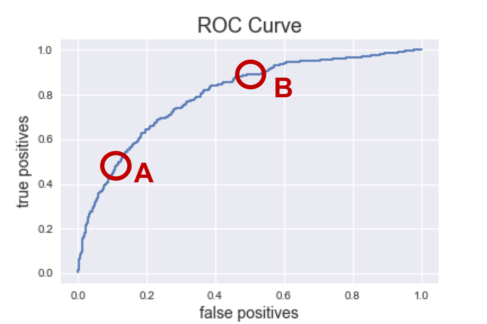

My final model combined random forest, gradient boosting, and ada boost. By combining these three models, I achieved a stronger model than any one model individually.
Everytime the app suggests one user to another, it's making a prediction that those two users will be a good match. The app has to balance showing every user in the area, including users who are unlikely to respond, against showing very few users and missing out on possible matches. Where they put that cutoff depends in large part on the number of users in an area.
The ROC curve below shows this tradeoff. Each model individually predicted a probability between 0 and 1, and then those probabilities add together to get a number from 0 to 3.
3 is obviously a response, and 0 is no response, but what about 2 or 1, or 1.5? The ROC curve represents moving the cutoff down from 3 (everyone's categorized as a "no", no false positive, nut no true positives either) to a 0 (we catch 100% of the true positives, but also mislabel 100% of the negatives as "yes"). 
Point A: San Francisco, California
Tons of users, we can afford to miss out on a few opportuntiites. The false positive rate is down at 10% so we are unlikely to show potential users who wouldn't be a good match. To achieve such a low false positive rate, we have to accept a true positive rate at 50%, which isn't great; it means we're not picking up on about half of potential matches. But as long as there are lots of fish in the sea, it's not imperative that we catch them all.
Point B: Hartford, Connecticut
I love my home state of Connecitcut, but there just isn't the density of young people looking for shared housing. This means we can't be as picky in matching users. Yes, our false positive rate jumps to 50%, meaning about half the people we suggest won't be a match, but we need that high false positive rate to maintain a 90% true positive rate, missing out on very few potential matches.